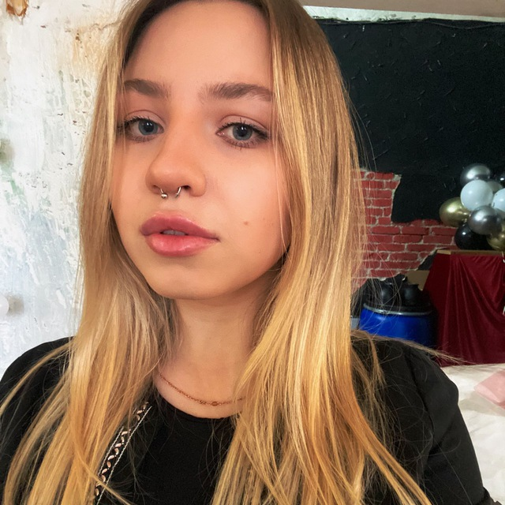

Резюме
4 сентября 2002 года
Город проживания Москва
Профессиональные навыки
 Твой музыкант
Город проживания Москва
Профессиональные навыки
- Знание программ: Abode Photoshop, Adobe Illustrator, Canva, Instories, CapCut, MS Power Point, MS Excel
- Копирайт/рерайт текстов и статей
- Написание контент-плана, анализ целевой аудитории, настройка таргетированной рекламы
- Создание контента для постов и stories
- Опыт написания технического задания для дизайнеров и копирайтеров
- Написание пресс-релизов, организации event - мероприятий
Участие в проектах
Сейчас я работаю
Неизвестный Композитор
Подробнее ›